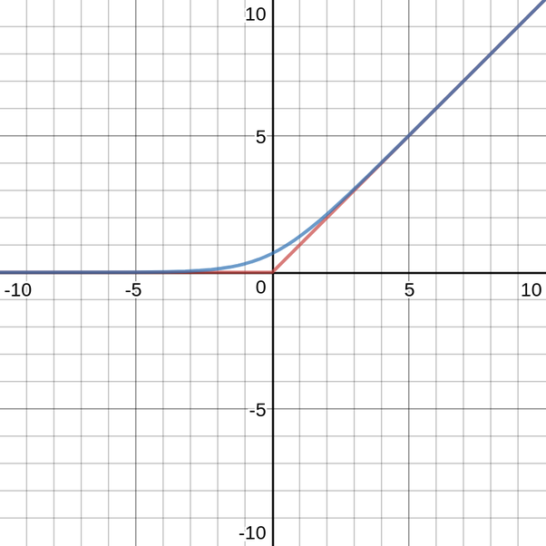
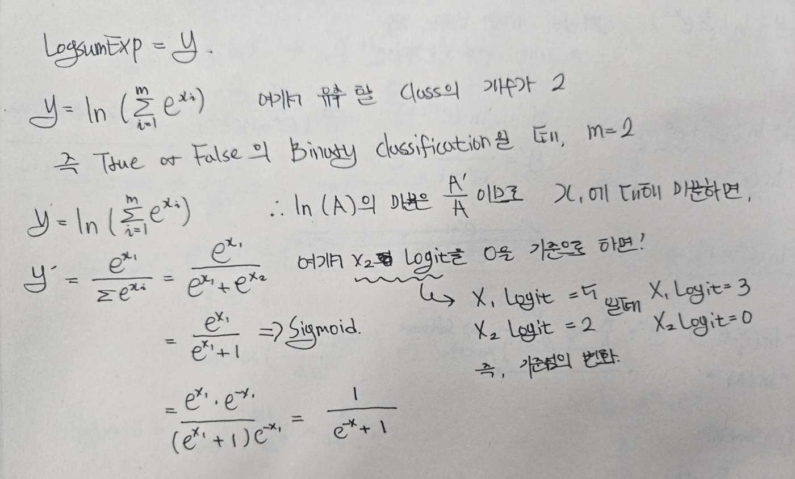
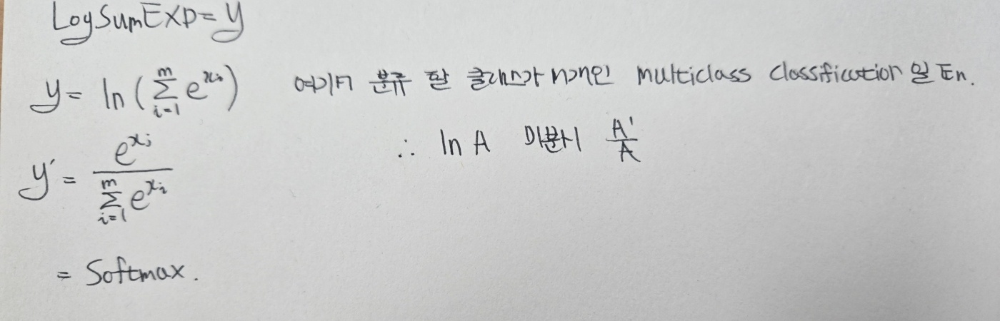
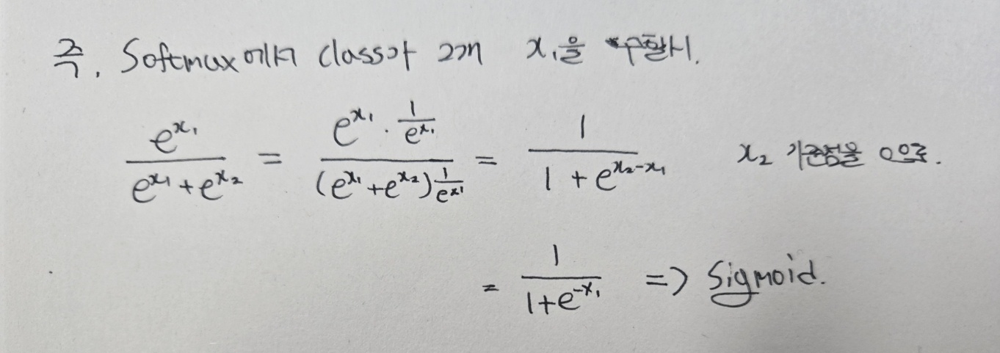

빨간선인 ReLU는 $\max(0, x)$로 원점 근처에 뾰족한 꺾임이 있다.
파란선은 Softplus로, LSE의 $m=2$, $x_1=0$, $x_2=x$인 특수한 경우다.
즉, 입력 두 개 중 하나를 기준점 0으로 고정한 경우이다.
$\max(0, x)$의 각 입력에 지수함수를 씌워 $e^0$, $e^x$를 만들고,
서로 더한 뒤 $\ln$으로 눌러주면 뾰족한 꺾임이 사라지고 부드러운 곡선이 된다.
$y = \ln(e^0 + e^x) = \ln(1 + e^x) = \text{LSE}(0,\, x)$
즉, $y = \ln\left(\sum_{i=1}^{m} e^{x_i}\right)$ 에서
$m=2$, $x_1=0$, $x_2=x$를 대입한 케이스다.
통계 모델링과 머신 러닝에서는 종종 로그 스케일로 연산을 수행한다.
하지만 큰 값을 지수화 할 때 UnderFlow나 OverFlow를 유발 할 수 있다.
하지만 로그 스케일을 사용하면 곱셈을 덧셈으로 변환 할 수 있다.
나아가 $f(x)와 g(x)$같은 함수를 드룰 때 미분의 선형성에 의해 다음이 성립한다. 종종 곱의 미분법을 적용하는 것 보다 이처럼 함수를 따로 미분하는 것이 훨씬 쉬울 것 이다.
하지만 때로는 상당히 클 수도 있는 로그 스케일의 값들을 다시 원래 스케일로 되돌려야 할 때가 있다.
예를들어 길이가 $N$인 로그 확률 벡터 $x_i = \log(p_i)$를 정규화해야 한다면,
Softmax에서 각각의 $x_n$은 매우 크거나 음수 or 양수일 수도 있는 로그 확률이기에,
이를 지수화하면 값에 따라 언더플로우나 오버플로우가 발생 할 수 있다.
LogSumExp연산은 앞서 말한 수치적 문제들을 예방하는 데 도움을 줄 수 있다.
Softmax부터 시작하여 식을 정리해 보겠다.
확률 $p_i$가 LSE를 사용한 식으로 정리되어진다.
이 때 LSE를 사용하는 것이 왜 overflow나 underflow가 발생하는 것을 예방하는지 알아보자.
우리는 LogSumExp를 아래 연산을 통해서
지수 안의 값들을 임의의 상수 c만큼 이동 시키면서도 최종적으로는 동일한 값을 낼 수 있다.
여기서 $x_n$의 값중 가장 큰 값을 c로 지정하게 된다면,
overflow가 발생 할 일이 없다.
결과적으론 값이 동일하게 계산되지만, 오버플로우를 피한 것 이다.
$\sum_{i=1}^{m}$에서 m은 우리가 예측할 클래스의 개수이며,
여기서 우리가 예측할 문제의 확률을 지수화를 한 $e^x_j$의 $x_j$ 기준으로 미분을 해보겠다.
즉, m개의 클래스 중 j번째 점수를 변화시켰을 때의 전체 값에 어떤 영향을 주는지 알아보겠다.



LSE는 결국 max의 Smooth 버전(Real Softmax)으로,
미분의 의미는 "$x_i$를 조절하였을 때 $y$가 얼마나 변하는가?" 이다.
$e^{x_i}$가 $S = \sum e^{x_j}$ 전체에서 차지하는 비율이 곧 $x_i$의 영향력이므로,
미분하면 자연스럽게 $\frac{e^{x_i}}{\sum e^{x_j}}$ 형태, 즉 비율이 나온다.
분류할 Class가 2개라면 비율이 하나로 줄어 Sigmoid,
분류할 Class가 n개라면 Softmax가 된다.